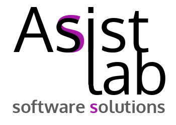
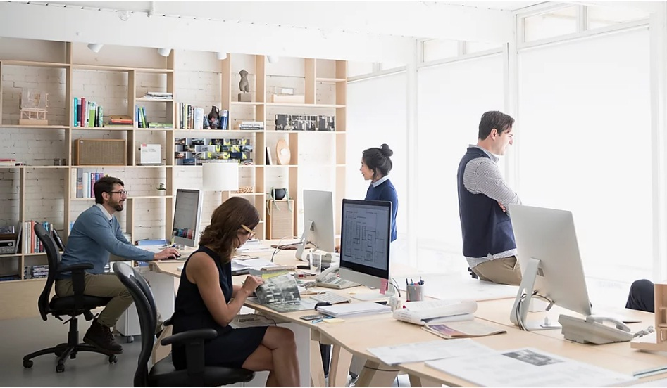
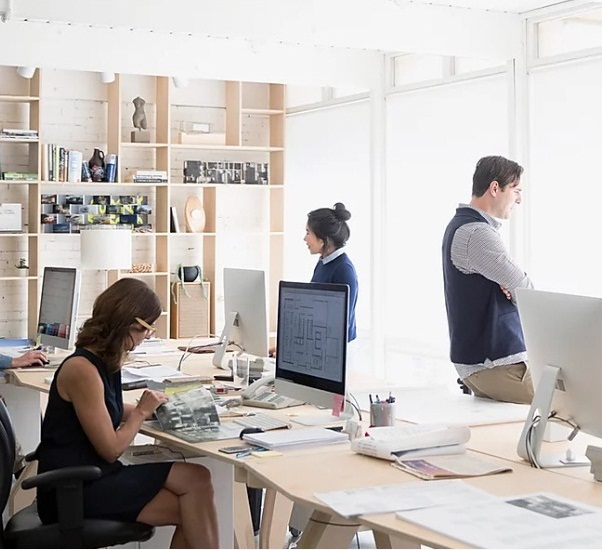

Home
Careers
Contact Us
English ˅
English
Русский
≡
All the way from idea
to solution
 
We can
AS
S
IST
with:
WEB Development
Cloud and on-premise development
Enterprise Solutions Development
Start Ups and enterprises
Mobile Apps Development
Single and Multi-platform
IoT Solutions Development
Connect the unconnectable
st. Karl Marks 1, Gomel, Republic of Belarus
©2020 by ASIST-LAB.